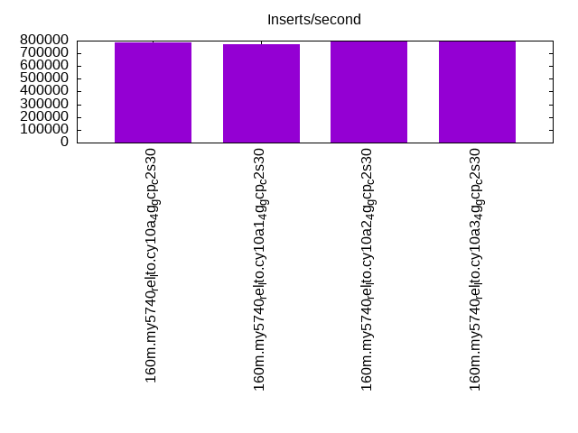
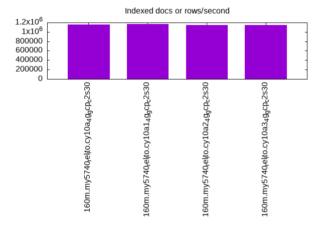
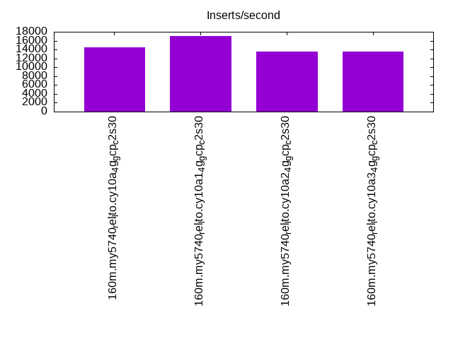
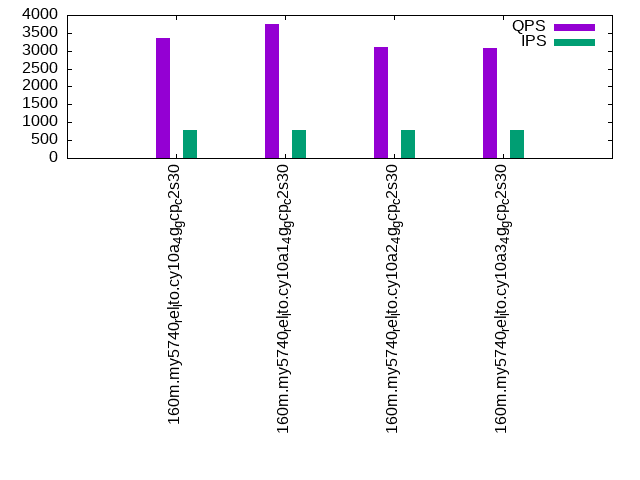
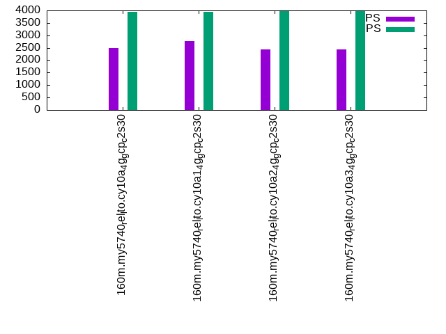
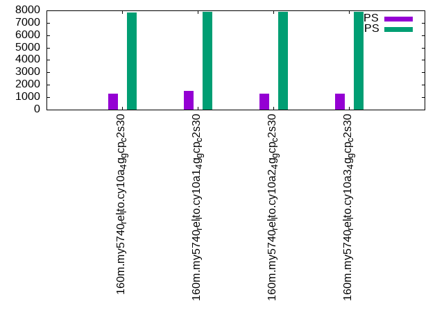

This is a report for the insert benchmark with 160M docs and 8 client(s). It is generated by scripts (bash, awk, sed) and Tufte might not be impressed. An overview of the insert benchmark is here and a short update is here. Below, by DBMS, I mean DBMS+version.config. An example is my8020.c10b40 where my means MySQL, 8020 is version 8.0.20 and c10b40 is the name for the configuration file.
The test server is a c2-standard-30 from GCP with 15 cores, hyperthreads disabled, 120G RAM, XFS + SW RAID 0 on 4 NVMe devices (1.5TB). The benchmark was run with 8 client and there were 1 or 3 connections per client (1 for queries or inserts without rate limits, 1+1 for rate limited inserts+deletes). There are 8 tables, client per table. It loads 160M rows without secondary indexes, creates secondary indexes, then inserts 80M rows with a delete per insert to avoid growing the table. It then does 3 read+write tests for 1800s each that do queries as fast as possible with 100, 500 and then 1000 inserts/second/client concurrent with the queries and 1000 deletes/second to avoid growing the table. The database is cached by the OS but not by InnoDB.
The tested DBMS are:
The numbers are inserts/s for l.i0 and l.i1, indexed docs (or rows) /s for l.x and queries/s for q*.2. The values are the average rate over the entire test for inserts (IPS) and queries (QPS). The range of values for IPS and QPS is split into 3 parts: bottom 25%, middle 50%, top 25%. Values in the bottom 25% have a red background, values in the top 25% have a green background and values in the middle have no color. A gray background is used for values that can be ignored because the DBMS did not sustain the target insert rate. Red backgrounds are not used when the minimum value is within 80% of the max value.
| dbms | l.i0 | l.x | l.i1 | q100.1 | q500.1 | q1000.1 |
|---|---|---|---|---|---|---|
| 160m.my5740_rel_lto.cy10a_4g_gcp_c2s30 | 784314 | 1160145 | 14443 | 3361 | 2479 | 1306 |
| 160m.my5740_rel_lto.cy10a1_4g_gcp_c2s30 | 772947 | 1168613 | 16971 | 3762 | 2780 | 1484 |
| 160m.my5740_rel_lto.cy10a2_4g_gcp_c2s30 | 792079 | 1143571 | 13555 | 3098 | 2440 | 1297 |
| 160m.my5740_rel_lto.cy10a3_4g_gcp_c2s30 | 796020 | 1143571 | 13580 | 3066 | 2423 | 1283 |
This table has relative throughput, throughput for the DBMS relative to the DBMS in the first line, using the absolute throughput from the previous table.
| dbms | l.i0 | l.x | l.i1 | q100.1 | q500.1 | q1000.1 |
|---|---|---|---|---|---|---|
| 160m.my5740_rel_lto.cy10a_4g_gcp_c2s30 | 1.00 | 1.00 | 1.00 | 1.00 | 1.00 | 1.00 |
| 160m.my5740_rel_lto.cy10a1_4g_gcp_c2s30 | 0.99 | 1.01 | 1.18 | 1.12 | 1.12 | 1.14 |
| 160m.my5740_rel_lto.cy10a2_4g_gcp_c2s30 | 1.01 | 0.99 | 0.94 | 0.92 | 0.98 | 0.99 |
| 160m.my5740_rel_lto.cy10a3_4g_gcp_c2s30 | 1.01 | 0.99 | 0.94 | 0.91 | 0.98 | 0.98 |
This lists the average rate of inserts/s for the tests that do inserts concurrent with queries. For such tests the query rate is listed in the table above. The read+write tests are setup so that the insert rate should match the target rate every second. Cells that are not at least 95% of the target have a red background to indicate a failure to satisfy the target.
| dbms | q100.1 | q500.1 | q1000.1 |
|---|---|---|---|
| my5740_rel_lto.cy10a_4g_gcp_c2s30 | 780 | 3947 | 7860 |
| my5740_rel_lto.cy10a1_4g_gcp_c2s30 | 782 | 3950 | 7882 |
| my5740_rel_lto.cy10a2_4g_gcp_c2s30 | 785 | 3965 | 7873 |
| my5740_rel_lto.cy10a3_4g_gcp_c2s30 | 783 | 3967 | 7877 |
| target | 800 | 4000 | 8000 |
l.i0: load without secondary indexes. Graphs for performance per 1-second interval are here.
Average throughput:
Insert response time histogram: each cell has the percentage of responses that take <= the time in the header and max is the max response time in seconds. For the max column values in the top 25% of the range have a red background and in the bottom 25% of the range have a green background. The red background is not used when the min value is within 80% of the max value.
| dbms | 256us | 1ms | 4ms | 16ms | 64ms | 256ms | 1s | 4s | 16s | gt | max |
|---|---|---|---|---|---|---|---|---|---|---|---|
| my5740_rel_lto.cy10a_4g_gcp_c2s30 | 95.581 | 4.161 | 0.214 | 0.030 | 0.014 | 0.001 | 0.264 | ||||
| my5740_rel_lto.cy10a1_4g_gcp_c2s30 | 93.544 | 6.190 | 0.222 | 0.029 | 0.015 | 0.225 | |||||
| my5740_rel_lto.cy10a2_4g_gcp_c2s30 | 95.688 | 4.051 | 0.218 | 0.028 | 0.015 | 0.254 | |||||
| my5740_rel_lto.cy10a3_4g_gcp_c2s30 | 95.503 | 4.237 | 0.222 | 0.024 | 0.014 | nonzero | 0.259 |
Performance metrics for the DBMS listed above. Some are normalized by throughput, others are not. Legend for results is here.
ips qps rps rmbps wps wmbps rpq rkbpq wpi wkbpi csps cpups cspq cpupq dbgb1 dbgb2 rss maxop p50 p99 tag 784314 0 0 0.0 766.8 191.8 0.000 0.000 0.001 0.250 82898 69.1 0.106 13 10.6 139.1 4.5 0.264 108220 82710 160m.my5740_rel_lto.cy10a_4g_gcp_c2s30 772947 0 0 0.0 735.9 187.3 0.000 0.000 0.001 0.248 83156 68.7 0.108 13 10.6 139.1 4.5 0.225 105985 82011 160m.my5740_rel_lto.cy10a1_4g_gcp_c2s30 792079 0 0 0.0 756.3 187.7 0.000 0.000 0.001 0.243 82781 68.7 0.105 13 10.6 139.1 4.5 0.254 111079 79113 160m.my5740_rel_lto.cy10a2_4g_gcp_c2s30 796020 0 0 0.0 745.7 192.1 0.000 0.000 0.001 0.247 82677 69.0 0.104 13 10.6 139.1 4.5 0.259 111217 82810 160m.my5740_rel_lto.cy10a3_4g_gcp_c2s30
l.x: create secondary indexes.
Average throughput:
Performance metrics for the DBMS listed above. Some are normalized by throughput, others are not. Legend for results is here.
ips qps rps rmbps wps wmbps rpq rkbpq wpi wkbpi csps cpups cspq cpupq dbgb1 dbgb2 rss maxop p50 p99 tag 1160145 0 0 0.0 3541.0 937.8 0.000 0.000 0.003 0.828 37331 34.1 0.032 4 23.6 152.1 4.7 0.030 NA NA 160m.my5740_rel_lto.cy10a_4g_gcp_c2s30 1168613 0 0 0.0 3581.6 932.2 0.000 0.000 0.003 0.817 44652 34.4 0.038 4 23.6 152.1 4.7 0.030 NA NA 160m.my5740_rel_lto.cy10a1_4g_gcp_c2s30 1143571 0 0 0.0 3477.2 903.0 0.000 0.000 0.003 0.809 39929 32.9 0.035 4 23.6 152.1 4.7 0.030 NA NA 160m.my5740_rel_lto.cy10a2_4g_gcp_c2s30 1143571 0 0 0.0 3531.6 906.6 0.000 0.000 0.003 0.812 39937 32.8 0.035 4 23.6 152.1 4.7 0.030 NA NA 160m.my5740_rel_lto.cy10a3_4g_gcp_c2s30
l.i1: continue load after secondary indexes created. Graphs for performance per 1-second interval are here.
Average throughput:
Insert response time histogram: each cell has the percentage of responses that take <= the time in the header and max is the max response time in seconds. For the max column values in the top 25% of the range have a red background and in the bottom 25% of the range have a green background. The red background is not used when the min value is within 80% of the max value.
| dbms | 256us | 1ms | 4ms | 16ms | 64ms | 256ms | 1s | 4s | 16s | gt | max |
|---|---|---|---|---|---|---|---|---|---|---|---|
| my5740_rel_lto.cy10a_4g_gcp_c2s30 | 2.646 | 38.965 | 50.888 | 7.257 | 0.244 | 0.618 | |||||
| my5740_rel_lto.cy10a1_4g_gcp_c2s30 | 1.580 | 53.134 | 40.278 | 4.612 | 0.396 | 0.731 | |||||
| my5740_rel_lto.cy10a2_4g_gcp_c2s30 | 2.726 | 32.981 | 56.625 | 7.387 | 0.280 | 0.723 | |||||
| my5740_rel_lto.cy10a3_4g_gcp_c2s30 | 2.724 | 33.054 | 56.538 | 7.397 | 0.286 | 0.799 |
Delete response time histogram: each cell has the percentage of responses that take <= the time in the header and max is the max response time in seconds. For the max column values in the top 25% of the range have a red background and in the bottom 25% of the range have a green background. The red background is not used when the min value is within 80% of the max value.
| dbms | 256us | 1ms | 4ms | 16ms | 64ms | 256ms | 1s | 4s | 16s | gt | max |
|---|---|---|---|---|---|---|---|---|---|---|---|
| my5740_rel_lto.cy10a_4g_gcp_c2s30 | nonzero | 3.944 | 41.954 | 48.528 | 5.556 | 0.018 | 0.451 | ||||
| my5740_rel_lto.cy10a1_4g_gcp_c2s30 | 0.001 | 2.932 | 56.043 | 37.685 | 3.191 | 0.148 | 0.845 | ||||
| my5740_rel_lto.cy10a2_4g_gcp_c2s30 | nonzero | 4.029 | 35.895 | 54.406 | 5.643 | 0.027 | 0.575 | ||||
| my5740_rel_lto.cy10a3_4g_gcp_c2s30 | 0.001 | 4.013 | 35.935 | 54.384 | 5.640 | 0.028 | 0.696 |
Performance metrics for the DBMS listed above. Some are normalized by throughput, others are not. Legend for results is here.
ips qps rps rmbps wps wmbps rpq rkbpq wpi wkbpi csps cpups cspq cpupq dbgb1 dbgb2 rss maxop p50 p99 tag 14443 0 2 0.6 15096.0 471.3 0.000 0.040 1.045 33.414 137695 35.8 9.534 372 41.0 175.7 4.7 0.618 1848 200 160m.my5740_rel_lto.cy10a_4g_gcp_c2s30 16971 0 3 0.7 14622.7 472.2 0.000 0.041 0.862 28.493 175228 44.5 10.325 393 40.9 175.6 4.7 0.731 2197 200 160m.my5740_rel_lto.cy10a1_4g_gcp_c2s30 13555 0 2 0.5 15377.4 476.6 0.000 0.038 1.134 36.004 133401 33.7 9.842 373 41.1 176.0 4.7 0.723 1748 200 160m.my5740_rel_lto.cy10a2_4g_gcp_c2s30 13580 0 2 0.5 15354.0 477.8 0.000 0.041 1.131 36.025 133657 33.8 9.842 373 41.1 176.0 4.7 0.799 1748 150 160m.my5740_rel_lto.cy10a3_4g_gcp_c2s30
q100.1: range queries with 100 insert/s per client. Graphs for performance per 1-second interval are here.
Average throughput:
Query response time histogram: each cell has the percentage of responses that take <= the time in the header and max is the max response time in seconds. For max values in the top 25% of the range have a red background and in the bottom 25% of the range have a green background. The red background is not used when the min value is within 80% of the max value.
| dbms | 256us | 1ms | 4ms | 16ms | 64ms | 256ms | 1s | 4s | 16s | gt | max |
|---|---|---|---|---|---|---|---|---|---|---|---|
| my5740_rel_lto.cy10a_4g_gcp_c2s30 | 39.625 | 27.285 | 12.729 | 17.863 | 2.488 | 0.010 | nonzero | 0.337 | |||
| my5740_rel_lto.cy10a1_4g_gcp_c2s30 | 39.768 | 30.793 | 11.430 | 15.880 | 2.118 | 0.011 | nonzero | 0.364 | |||
| my5740_rel_lto.cy10a2_4g_gcp_c2s30 | 39.108 | 25.562 | 12.699 | 20.149 | 2.473 | 0.010 | 0.238 | ||||
| my5740_rel_lto.cy10a3_4g_gcp_c2s30 | 39.086 | 25.483 | 12.555 | 20.334 | 2.531 | 0.011 | nonzero | 0.261 |
Insert response time histogram: each cell has the percentage of responses that take <= the time in the header and max is the max response time in seconds. For max values in the top 25% of the range have a red background and in the bottom 25% of the range have a green background. The red background is not used when the min value is within 80% of the max value.
| dbms | 256us | 1ms | 4ms | 16ms | 64ms | 256ms | 1s | 4s | 16s | gt | max |
|---|---|---|---|---|---|---|---|---|---|---|---|
| my5740_rel_lto.cy10a_4g_gcp_c2s30 | 31.712 | 52.691 | 15.545 | 0.052 | 0.084 | ||||||
| my5740_rel_lto.cy10a1_4g_gcp_c2s30 | 30.653 | 48.677 | 20.476 | 0.194 | 0.205 | ||||||
| my5740_rel_lto.cy10a2_4g_gcp_c2s30 | 24.108 | 48.771 | 26.896 | 0.222 | 0.003 | 0.334 | |||||
| my5740_rel_lto.cy10a3_4g_gcp_c2s30 | 23.917 | 47.889 | 27.983 | 0.208 | 0.003 | 0.313 |
Delete response time histogram: each cell has the percentage of responses that take <= the time in the header and max is the max response time in seconds. For max values in the top 25% of the range have a red background and in the bottom 25% of the range have a green background. The red background is not used when the min value is within 80% of the max value.
| dbms | 256us | 1ms | 4ms | 16ms | 64ms | 256ms | 1s | 4s | 16s | gt | max |
|---|---|---|---|---|---|---|---|---|---|---|---|
| my5740_rel_lto.cy10a_4g_gcp_c2s30 | 33.288 | 51.962 | 14.715 | 0.035 | 0.148 | ||||||
| my5740_rel_lto.cy10a1_4g_gcp_c2s30 | 32.927 | 47.785 | 19.111 | 0.177 | 0.210 | ||||||
| my5740_rel_lto.cy10a2_4g_gcp_c2s30 | 25.361 | 48.951 | 25.458 | 0.229 | 0.244 | ||||||
| my5740_rel_lto.cy10a3_4g_gcp_c2s30 | 25.090 | 48.378 | 26.375 | 0.156 | 0.139 |
Performance metrics for the DBMS listed above. Some are normalized by throughput, others are not. Legend for results is here.
ips qps rps rmbps wps wmbps rpq rkbpq wpi wkbpi csps cpups cspq cpupq dbgb1 dbgb2 rss maxop p50 p99 tag 780 3361 9 0.3 17861.0 432.5 0.003 0.102 22.887 567.440 121306 15.7 36.088 701 41.0 175.7 4.6 0.337 448 80 160m.my5740_rel_lto.cy10a_4g_gcp_c2s30 782 3762 11 0.3 18218.7 451.1 0.003 0.092 23.295 590.583 133573 17.6 35.508 702 40.9 175.6 4.6 0.364 496 64 160m.my5740_rel_lto.cy10a1_4g_gcp_c2s30 785 3098 12 0.3 17993.1 423.6 0.004 0.114 22.930 552.779 119360 15.1 38.523 731 41.1 176.0 4.6 0.238 400 80 160m.my5740_rel_lto.cy10a2_4g_gcp_c2s30 783 3066 12 0.3 17888.3 435.8 0.004 0.103 22.834 569.634 118562 15.0 38.675 734 41.1 176.0 4.6 0.261 400 64 160m.my5740_rel_lto.cy10a3_4g_gcp_c2s30
q500.1: range queries with 500 insert/s per client. Graphs for performance per 1-second interval are here.
Average throughput:
Query response time histogram: each cell has the percentage of responses that take <= the time in the header and max is the max response time in seconds. For max values in the top 25% of the range have a red background and in the bottom 25% of the range have a green background. The red background is not used when the min value is within 80% of the max value.
| dbms | 256us | 1ms | 4ms | 16ms | 64ms | 256ms | 1s | 4s | 16s | gt | max |
|---|---|---|---|---|---|---|---|---|---|---|---|
| my5740_rel_lto.cy10a_4g_gcp_c2s30 | 27.698 | 30.180 | 14.587 | 23.586 | 3.931 | 0.017 | 0.150 | ||||
| my5740_rel_lto.cy10a1_4g_gcp_c2s30 | 28.252 | 34.356 | 13.241 | 20.699 | 3.434 | 0.017 | 0.192 | ||||
| my5740_rel_lto.cy10a2_4g_gcp_c2s30 | 28.259 | 29.304 | 14.531 | 23.787 | 4.105 | 0.015 | 0.140 | ||||
| my5740_rel_lto.cy10a3_4g_gcp_c2s30 | 28.346 | 29.248 | 14.242 | 23.987 | 4.163 | 0.014 | 0.168 |
Insert response time histogram: each cell has the percentage of responses that take <= the time in the header and max is the max response time in seconds. For max values in the top 25% of the range have a red background and in the bottom 25% of the range have a green background. The red background is not used when the min value is within 80% of the max value.
| dbms | 256us | 1ms | 4ms | 16ms | 64ms | 256ms | 1s | 4s | 16s | gt | max |
|---|---|---|---|---|---|---|---|---|---|---|---|
| my5740_rel_lto.cy10a_4g_gcp_c2s30 | 26.587 | 55.094 | 18.258 | 0.061 | 0.158 | ||||||
| my5740_rel_lto.cy10a1_4g_gcp_c2s30 | 23.644 | 55.983 | 20.174 | 0.200 | 0.175 | ||||||
| my5740_rel_lto.cy10a2_4g_gcp_c2s30 | 29.180 | 54.645 | 16.142 | 0.033 | 0.116 | ||||||
| my5740_rel_lto.cy10a3_4g_gcp_c2s30 | 31.498 | 54.493 | 13.999 | 0.010 | 0.094 |
Delete response time histogram: each cell has the percentage of responses that take <= the time in the header and max is the max response time in seconds. For max values in the top 25% of the range have a red background and in the bottom 25% of the range have a green background. The red background is not used when the min value is within 80% of the max value.
| dbms | 256us | 1ms | 4ms | 16ms | 64ms | 256ms | 1s | 4s | 16s | gt | max |
|---|---|---|---|---|---|---|---|---|---|---|---|
| my5740_rel_lto.cy10a_4g_gcp_c2s30 | 27.903 | 54.651 | 17.402 | 0.044 | 0.116 | ||||||
| my5740_rel_lto.cy10a1_4g_gcp_c2s30 | 25.269 | 55.633 | 18.929 | 0.168 | 0.187 | ||||||
| my5740_rel_lto.cy10a2_4g_gcp_c2s30 | 30.044 | 54.458 | 15.461 | 0.037 | 0.103 | ||||||
| my5740_rel_lto.cy10a3_4g_gcp_c2s30 | 32.467 | 54.269 | 13.257 | 0.007 | 0.082 |
Performance metrics for the DBMS listed above. Some are normalized by throughput, others are not. Legend for results is here.
ips qps rps rmbps wps wmbps rpq rkbpq wpi wkbpi csps cpups cspq cpupq dbgb1 dbgb2 rss maxop p50 p99 tag 3947 2479 55 1.1 17396.9 437.9 0.022 0.457 4.407 113.604 119337 17.8 48.143 1077 41.0 175.7 4.6 0.150 319 240 160m.my5740_rel_lto.cy10a_4g_gcp_c2s30 3950 2780 65 1.3 17744.2 458.2 0.024 0.489 4.493 118.787 134056 19.6 48.229 1058 40.9 175.6 4.6 0.192 352 208 160m.my5740_rel_lto.cy10a1_4g_gcp_c2s30 3965 2440 47 1.0 17401.5 422.9 0.019 0.411 4.389 109.229 119877 17.5 49.120 1076 41.1 176.0 4.6 0.140 304 240 160m.my5740_rel_lto.cy10a2_4g_gcp_c2s30 3967 2423 43 0.9 17283.1 438.1 0.018 0.394 4.357 113.089 118534 17.2 48.914 1065 41.1 176.0 4.6 0.168 304 240 160m.my5740_rel_lto.cy10a3_4g_gcp_c2s30
q1000.1: range queries with 1000 insert/s per client. Graphs for performance per 1-second interval are here.
Average throughput:
Query response time histogram: each cell has the percentage of responses that take <= the time in the header and max is the max response time in seconds. For max values in the top 25% of the range have a red background and in the bottom 25% of the range have a green background. The red background is not used when the min value is within 80% of the max value.
| dbms | 256us | 1ms | 4ms | 16ms | 64ms | 256ms | 1s | 4s | 16s | gt | max |
|---|---|---|---|---|---|---|---|---|---|---|---|
| my5740_rel_lto.cy10a_4g_gcp_c2s30 | 15.274 | 27.193 | 16.872 | 29.294 | 11.095 | 0.270 | 0.001 | 0.517 | |||
| my5740_rel_lto.cy10a1_4g_gcp_c2s30 | 15.793 | 31.664 | 17.323 | 25.796 | 9.123 | 0.296 | 0.006 | 0.809 | |||
| my5740_rel_lto.cy10a2_4g_gcp_c2s30 | 15.782 | 25.965 | 15.927 | 30.726 | 11.424 | 0.176 | nonzero | 0.381 | |||
| my5740_rel_lto.cy10a3_4g_gcp_c2s30 | 15.702 | 25.892 | 15.630 | 30.973 | 11.629 | 0.174 | nonzero | 0.315 |
Insert response time histogram: each cell has the percentage of responses that take <= the time in the header and max is the max response time in seconds. For max values in the top 25% of the range have a red background and in the bottom 25% of the range have a green background. The red background is not used when the min value is within 80% of the max value.
| dbms | 256us | 1ms | 4ms | 16ms | 64ms | 256ms | 1s | 4s | 16s | gt | max |
|---|---|---|---|---|---|---|---|---|---|---|---|
| my5740_rel_lto.cy10a_4g_gcp_c2s30 | 12.047 | 41.812 | 44.100 | 2.000 | 0.041 | 0.824 | |||||
| my5740_rel_lto.cy10a1_4g_gcp_c2s30 | 9.643 | 42.473 | 45.134 | 2.645 | 0.106 | 0.825 | |||||
| my5740_rel_lto.cy10a2_4g_gcp_c2s30 | 16.755 | 46.119 | 36.630 | 0.492 | 0.005 | 0.392 | |||||
| my5740_rel_lto.cy10a3_4g_gcp_c2s30 | 17.164 | 46.423 | 35.979 | 0.432 | 0.002 | 0.471 |
Delete response time histogram: each cell has the percentage of responses that take <= the time in the header and max is the max response time in seconds. For max values in the top 25% of the range have a red background and in the bottom 25% of the range have a green background. The red background is not used when the min value is within 80% of the max value.
| dbms | 256us | 1ms | 4ms | 16ms | 64ms | 256ms | 1s | 4s | 16s | gt | max |
|---|---|---|---|---|---|---|---|---|---|---|---|
| my5740_rel_lto.cy10a_4g_gcp_c2s30 | 12.687 | 42.377 | 43.383 | 1.523 | 0.029 | 0.549 | |||||
| my5740_rel_lto.cy10a1_4g_gcp_c2s30 | 10.459 | 43.389 | 43.927 | 2.150 | 0.075 | 0.822 | |||||
| my5740_rel_lto.cy10a2_4g_gcp_c2s30 | 17.550 | 46.528 | 35.591 | 0.328 | 0.003 | 0.398 | |||||
| my5740_rel_lto.cy10a3_4g_gcp_c2s30 | 18.020 | 46.782 | 34.915 | 0.282 | 0.001 | 0.369 |
Performance metrics for the DBMS listed above. Some are normalized by throughput, others are not. Legend for results is here.
ips qps rps rmbps wps wmbps rpq rkbpq wpi wkbpi csps cpups cspq cpupq dbgb1 dbgb2 rss maxop p50 p99 tag 7860 1306 68 1.4 16873.0 448.2 0.052 1.066 2.147 58.391 132157 23.5 101.177 2699 41.3 176.2 4.6 0.517 160 80 160m.my5740_rel_lto.cy10a_4g_gcp_c2s30 7882 1484 84 1.7 16956.4 467.9 0.056 1.172 2.151 60.790 147246 26.0 99.189 2627 41.2 176.0 4.6 0.809 176 80 160m.my5740_rel_lto.cy10a1_4g_gcp_c2s30 7873 1297 51 1.0 16935.9 427.8 0.040 0.802 2.151 55.641 129669 22.5 99.968 2602 41.4 176.7 4.6 0.381 144 64 160m.my5740_rel_lto.cy10a2_4g_gcp_c2s30 7877 1283 51 1.0 16851.8 448.1 0.040 0.798 2.139 58.255 128697 22.2 100.317 2596 41.5 176.6 4.6 0.315 160 80 160m.my5740_rel_lto.cy10a3_4g_gcp_c2s30
l.i0: load without secondary indexes
Performance metrics for all DBMS, not just the ones listed above. Some are normalized by throughput, others are not. Legend for results is here.
ips qps rps rmbps wps wmbps rpq rkbpq wpi wkbpi csps cpups cspq cpupq dbgb1 dbgb2 rss maxop p50 p99 tag 784314 0 0 0.0 766.8 191.8 0.000 0.000 0.001 0.250 82898 69.1 0.106 13 10.6 139.1 4.5 0.264 108220 82710 160m.my5740_rel_lto.cy10a_4g_gcp_c2s30 772947 0 0 0.0 735.9 187.3 0.000 0.000 0.001 0.248 83156 68.7 0.108 13 10.6 139.1 4.5 0.225 105985 82011 160m.my5740_rel_lto.cy10a1_4g_gcp_c2s30 792079 0 0 0.0 756.3 187.7 0.000 0.000 0.001 0.243 82781 68.7 0.105 13 10.6 139.1 4.5 0.254 111079 79113 160m.my5740_rel_lto.cy10a2_4g_gcp_c2s30 796020 0 0 0.0 745.7 192.1 0.000 0.000 0.001 0.247 82677 69.0 0.104 13 10.6 139.1 4.5 0.259 111217 82810 160m.my5740_rel_lto.cy10a3_4g_gcp_c2s30
l.x: create secondary indexes
Performance metrics for all DBMS, not just the ones listed above. Some are normalized by throughput, others are not. Legend for results is here.
ips qps rps rmbps wps wmbps rpq rkbpq wpi wkbpi csps cpups cspq cpupq dbgb1 dbgb2 rss maxop p50 p99 tag 1160145 0 0 0.0 3541.0 937.8 0.000 0.000 0.003 0.828 37331 34.1 0.032 4 23.6 152.1 4.7 0.030 NA NA 160m.my5740_rel_lto.cy10a_4g_gcp_c2s30 1168613 0 0 0.0 3581.6 932.2 0.000 0.000 0.003 0.817 44652 34.4 0.038 4 23.6 152.1 4.7 0.030 NA NA 160m.my5740_rel_lto.cy10a1_4g_gcp_c2s30 1143571 0 0 0.0 3477.2 903.0 0.000 0.000 0.003 0.809 39929 32.9 0.035 4 23.6 152.1 4.7 0.030 NA NA 160m.my5740_rel_lto.cy10a2_4g_gcp_c2s30 1143571 0 0 0.0 3531.6 906.6 0.000 0.000 0.003 0.812 39937 32.8 0.035 4 23.6 152.1 4.7 0.030 NA NA 160m.my5740_rel_lto.cy10a3_4g_gcp_c2s30
l.i1: continue load after secondary indexes created
Performance metrics for all DBMS, not just the ones listed above. Some are normalized by throughput, others are not. Legend for results is here.
ips qps rps rmbps wps wmbps rpq rkbpq wpi wkbpi csps cpups cspq cpupq dbgb1 dbgb2 rss maxop p50 p99 tag 14443 0 2 0.6 15096.0 471.3 0.000 0.040 1.045 33.414 137695 35.8 9.534 372 41.0 175.7 4.7 0.618 1848 200 160m.my5740_rel_lto.cy10a_4g_gcp_c2s30 16971 0 3 0.7 14622.7 472.2 0.000 0.041 0.862 28.493 175228 44.5 10.325 393 40.9 175.6 4.7 0.731 2197 200 160m.my5740_rel_lto.cy10a1_4g_gcp_c2s30 13555 0 2 0.5 15377.4 476.6 0.000 0.038 1.134 36.004 133401 33.7 9.842 373 41.1 176.0 4.7 0.723 1748 200 160m.my5740_rel_lto.cy10a2_4g_gcp_c2s30 13580 0 2 0.5 15354.0 477.8 0.000 0.041 1.131 36.025 133657 33.8 9.842 373 41.1 176.0 4.7 0.799 1748 150 160m.my5740_rel_lto.cy10a3_4g_gcp_c2s30
q100.1: range queries with 100 insert/s per client
Performance metrics for all DBMS, not just the ones listed above. Some are normalized by throughput, others are not. Legend for results is here.
ips qps rps rmbps wps wmbps rpq rkbpq wpi wkbpi csps cpups cspq cpupq dbgb1 dbgb2 rss maxop p50 p99 tag 780 3361 9 0.3 17861.0 432.5 0.003 0.102 22.887 567.440 121306 15.7 36.088 701 41.0 175.7 4.6 0.337 448 80 160m.my5740_rel_lto.cy10a_4g_gcp_c2s30 782 3762 11 0.3 18218.7 451.1 0.003 0.092 23.295 590.583 133573 17.6 35.508 702 40.9 175.6 4.6 0.364 496 64 160m.my5740_rel_lto.cy10a1_4g_gcp_c2s30 785 3098 12 0.3 17993.1 423.6 0.004 0.114 22.930 552.779 119360 15.1 38.523 731 41.1 176.0 4.6 0.238 400 80 160m.my5740_rel_lto.cy10a2_4g_gcp_c2s30 783 3066 12 0.3 17888.3 435.8 0.004 0.103 22.834 569.634 118562 15.0 38.675 734 41.1 176.0 4.6 0.261 400 64 160m.my5740_rel_lto.cy10a3_4g_gcp_c2s30
q500.1: range queries with 500 insert/s per client
Performance metrics for all DBMS, not just the ones listed above. Some are normalized by throughput, others are not. Legend for results is here.
ips qps rps rmbps wps wmbps rpq rkbpq wpi wkbpi csps cpups cspq cpupq dbgb1 dbgb2 rss maxop p50 p99 tag 3947 2479 55 1.1 17396.9 437.9 0.022 0.457 4.407 113.604 119337 17.8 48.143 1077 41.0 175.7 4.6 0.150 319 240 160m.my5740_rel_lto.cy10a_4g_gcp_c2s30 3950 2780 65 1.3 17744.2 458.2 0.024 0.489 4.493 118.787 134056 19.6 48.229 1058 40.9 175.6 4.6 0.192 352 208 160m.my5740_rel_lto.cy10a1_4g_gcp_c2s30 3965 2440 47 1.0 17401.5 422.9 0.019 0.411 4.389 109.229 119877 17.5 49.120 1076 41.1 176.0 4.6 0.140 304 240 160m.my5740_rel_lto.cy10a2_4g_gcp_c2s30 3967 2423 43 0.9 17283.1 438.1 0.018 0.394 4.357 113.089 118534 17.2 48.914 1065 41.1 176.0 4.6 0.168 304 240 160m.my5740_rel_lto.cy10a3_4g_gcp_c2s30
q1000.1: range queries with 1000 insert/s per client
Performance metrics for all DBMS, not just the ones listed above. Some are normalized by throughput, others are not. Legend for results is here.
ips qps rps rmbps wps wmbps rpq rkbpq wpi wkbpi csps cpups cspq cpupq dbgb1 dbgb2 rss maxop p50 p99 tag 7860 1306 68 1.4 16873.0 448.2 0.052 1.066 2.147 58.391 132157 23.5 101.177 2699 41.3 176.2 4.6 0.517 160 80 160m.my5740_rel_lto.cy10a_4g_gcp_c2s30 7882 1484 84 1.7 16956.4 467.9 0.056 1.172 2.151 60.790 147246 26.0 99.189 2627 41.2 176.0 4.6 0.809 176 80 160m.my5740_rel_lto.cy10a1_4g_gcp_c2s30 7873 1297 51 1.0 16935.9 427.8 0.040 0.802 2.151 55.641 129669 22.5 99.968 2602 41.4 176.7 4.6 0.381 144 64 160m.my5740_rel_lto.cy10a2_4g_gcp_c2s30 7877 1283 51 1.0 16851.8 448.1 0.040 0.798 2.139 58.255 128697 22.2 100.317 2596 41.5 176.6 4.6 0.315 160 80 160m.my5740_rel_lto.cy10a3_4g_gcp_c2s30
Insert response time histogram
256us 1ms 4ms 16ms 64ms 256ms 1s 4s 16s gt max tag 0.000 95.581 4.161 0.214 0.030 0.014 0.001 0.000 0.000 0.000 0.264 my5740_rel_lto.cy10a_4g_gcp_c2s30 0.000 93.544 6.190 0.222 0.029 0.015 0.000 0.000 0.000 0.000 0.225 my5740_rel_lto.cy10a1_4g_gcp_c2s30 0.000 95.688 4.051 0.218 0.028 0.015 0.000 0.000 0.000 0.000 0.254 my5740_rel_lto.cy10a2_4g_gcp_c2s30 0.000 95.503 4.237 0.222 0.024 0.014 nonzero 0.000 0.000 0.000 0.259 my5740_rel_lto.cy10a3_4g_gcp_c2s30
TODO - determine whether there is data for create index response time
Insert response time histogram
256us 1ms 4ms 16ms 64ms 256ms 1s 4s 16s gt max tag 0.000 0.000 2.646 38.965 50.888 7.257 0.244 0.000 0.000 0.000 0.618 my5740_rel_lto.cy10a_4g_gcp_c2s30 0.000 0.000 1.580 53.134 40.278 4.612 0.396 0.000 0.000 0.000 0.731 my5740_rel_lto.cy10a1_4g_gcp_c2s30 0.000 0.000 2.726 32.981 56.625 7.387 0.280 0.000 0.000 0.000 0.723 my5740_rel_lto.cy10a2_4g_gcp_c2s30 0.000 0.000 2.724 33.054 56.538 7.397 0.286 0.000 0.000 0.000 0.799 my5740_rel_lto.cy10a3_4g_gcp_c2s30
Delete response time histogram
256us 1ms 4ms 16ms 64ms 256ms 1s 4s 16s gt max tag 0.000 nonzero 3.944 41.954 48.528 5.556 0.018 0.000 0.000 0.000 0.451 my5740_rel_lto.cy10a_4g_gcp_c2s30 0.000 0.001 2.932 56.043 37.685 3.191 0.148 0.000 0.000 0.000 0.845 my5740_rel_lto.cy10a1_4g_gcp_c2s30 0.000 nonzero 4.029 35.895 54.406 5.643 0.027 0.000 0.000 0.000 0.575 my5740_rel_lto.cy10a2_4g_gcp_c2s30 0.000 0.001 4.013 35.935 54.384 5.640 0.028 0.000 0.000 0.000 0.696 my5740_rel_lto.cy10a3_4g_gcp_c2s30
Query response time histogram
256us 1ms 4ms 16ms 64ms 256ms 1s 4s 16s gt max tag 39.625 27.285 12.729 17.863 2.488 0.010 nonzero 0.000 0.000 0.000 0.337 my5740_rel_lto.cy10a_4g_gcp_c2s30 39.768 30.793 11.430 15.880 2.118 0.011 nonzero 0.000 0.000 0.000 0.364 my5740_rel_lto.cy10a1_4g_gcp_c2s30 39.108 25.562 12.699 20.149 2.473 0.010 0.000 0.000 0.000 0.000 0.238 my5740_rel_lto.cy10a2_4g_gcp_c2s30 39.086 25.483 12.555 20.334 2.531 0.011 nonzero 0.000 0.000 0.000 0.261 my5740_rel_lto.cy10a3_4g_gcp_c2s30
Insert response time histogram
256us 1ms 4ms 16ms 64ms 256ms 1s 4s 16s gt max tag 0.000 0.000 31.712 52.691 15.545 0.052 0.000 0.000 0.000 0.000 0.084 my5740_rel_lto.cy10a_4g_gcp_c2s30 0.000 0.000 30.653 48.677 20.476 0.194 0.000 0.000 0.000 0.000 0.205 my5740_rel_lto.cy10a1_4g_gcp_c2s30 0.000 0.000 24.108 48.771 26.896 0.222 0.003 0.000 0.000 0.000 0.334 my5740_rel_lto.cy10a2_4g_gcp_c2s30 0.000 0.000 23.917 47.889 27.983 0.208 0.003 0.000 0.000 0.000 0.313 my5740_rel_lto.cy10a3_4g_gcp_c2s30
Delete response time histogram
256us 1ms 4ms 16ms 64ms 256ms 1s 4s 16s gt max tag 0.000 0.000 33.288 51.962 14.715 0.035 0.000 0.000 0.000 0.000 0.148 my5740_rel_lto.cy10a_4g_gcp_c2s30 0.000 0.000 32.927 47.785 19.111 0.177 0.000 0.000 0.000 0.000 0.210 my5740_rel_lto.cy10a1_4g_gcp_c2s30 0.000 0.000 25.361 48.951 25.458 0.229 0.000 0.000 0.000 0.000 0.244 my5740_rel_lto.cy10a2_4g_gcp_c2s30 0.000 0.000 25.090 48.378 26.375 0.156 0.000 0.000 0.000 0.000 0.139 my5740_rel_lto.cy10a3_4g_gcp_c2s30
Query response time histogram
256us 1ms 4ms 16ms 64ms 256ms 1s 4s 16s gt max tag 27.698 30.180 14.587 23.586 3.931 0.017 0.000 0.000 0.000 0.000 0.150 my5740_rel_lto.cy10a_4g_gcp_c2s30 28.252 34.356 13.241 20.699 3.434 0.017 0.000 0.000 0.000 0.000 0.192 my5740_rel_lto.cy10a1_4g_gcp_c2s30 28.259 29.304 14.531 23.787 4.105 0.015 0.000 0.000 0.000 0.000 0.140 my5740_rel_lto.cy10a2_4g_gcp_c2s30 28.346 29.248 14.242 23.987 4.163 0.014 0.000 0.000 0.000 0.000 0.168 my5740_rel_lto.cy10a3_4g_gcp_c2s30
Insert response time histogram
256us 1ms 4ms 16ms 64ms 256ms 1s 4s 16s gt max tag 0.000 0.000 26.587 55.094 18.258 0.061 0.000 0.000 0.000 0.000 0.158 my5740_rel_lto.cy10a_4g_gcp_c2s30 0.000 0.000 23.644 55.983 20.174 0.200 0.000 0.000 0.000 0.000 0.175 my5740_rel_lto.cy10a1_4g_gcp_c2s30 0.000 0.000 29.180 54.645 16.142 0.033 0.000 0.000 0.000 0.000 0.116 my5740_rel_lto.cy10a2_4g_gcp_c2s30 0.000 0.000 31.498 54.493 13.999 0.010 0.000 0.000 0.000 0.000 0.094 my5740_rel_lto.cy10a3_4g_gcp_c2s30
Delete response time histogram
256us 1ms 4ms 16ms 64ms 256ms 1s 4s 16s gt max tag 0.000 0.000 27.903 54.651 17.402 0.044 0.000 0.000 0.000 0.000 0.116 my5740_rel_lto.cy10a_4g_gcp_c2s30 0.000 0.000 25.269 55.633 18.929 0.168 0.000 0.000 0.000 0.000 0.187 my5740_rel_lto.cy10a1_4g_gcp_c2s30 0.000 0.000 30.044 54.458 15.461 0.037 0.000 0.000 0.000 0.000 0.103 my5740_rel_lto.cy10a2_4g_gcp_c2s30 0.000 0.000 32.467 54.269 13.257 0.007 0.000 0.000 0.000 0.000 0.082 my5740_rel_lto.cy10a3_4g_gcp_c2s30
Query response time histogram
256us 1ms 4ms 16ms 64ms 256ms 1s 4s 16s gt max tag 15.274 27.193 16.872 29.294 11.095 0.270 0.001 0.000 0.000 0.000 0.517 my5740_rel_lto.cy10a_4g_gcp_c2s30 15.793 31.664 17.323 25.796 9.123 0.296 0.006 0.000 0.000 0.000 0.809 my5740_rel_lto.cy10a1_4g_gcp_c2s30 15.782 25.965 15.927 30.726 11.424 0.176 nonzero 0.000 0.000 0.000 0.381 my5740_rel_lto.cy10a2_4g_gcp_c2s30 15.702 25.892 15.630 30.973 11.629 0.174 nonzero 0.000 0.000 0.000 0.315 my5740_rel_lto.cy10a3_4g_gcp_c2s30
Insert response time histogram
256us 1ms 4ms 16ms 64ms 256ms 1s 4s 16s gt max tag 0.000 0.000 12.047 41.812 44.100 2.000 0.041 0.000 0.000 0.000 0.824 my5740_rel_lto.cy10a_4g_gcp_c2s30 0.000 0.000 9.643 42.473 45.134 2.645 0.106 0.000 0.000 0.000 0.825 my5740_rel_lto.cy10a1_4g_gcp_c2s30 0.000 0.000 16.755 46.119 36.630 0.492 0.005 0.000 0.000 0.000 0.392 my5740_rel_lto.cy10a2_4g_gcp_c2s30 0.000 0.000 17.164 46.423 35.979 0.432 0.002 0.000 0.000 0.000 0.471 my5740_rel_lto.cy10a3_4g_gcp_c2s30
Delete response time histogram
256us 1ms 4ms 16ms 64ms 256ms 1s 4s 16s gt max tag 0.000 0.000 12.687 42.377 43.383 1.523 0.029 0.000 0.000 0.000 0.549 my5740_rel_lto.cy10a_4g_gcp_c2s30 0.000 0.000 10.459 43.389 43.927 2.150 0.075 0.000 0.000 0.000 0.822 my5740_rel_lto.cy10a1_4g_gcp_c2s30 0.000 0.000 17.550 46.528 35.591 0.328 0.003 0.000 0.000 0.000 0.398 my5740_rel_lto.cy10a2_4g_gcp_c2s30 0.000 0.000 18.020 46.782 34.915 0.282 0.001 0.000 0.000 0.000 0.369 my5740_rel_lto.cy10a3_4g_gcp_c2s30